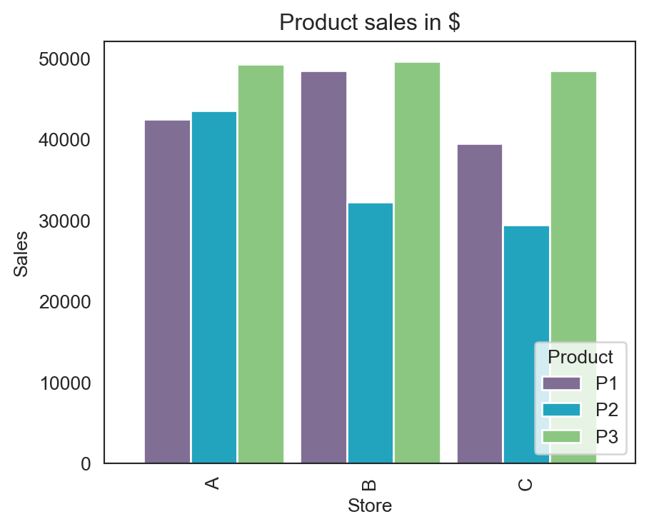
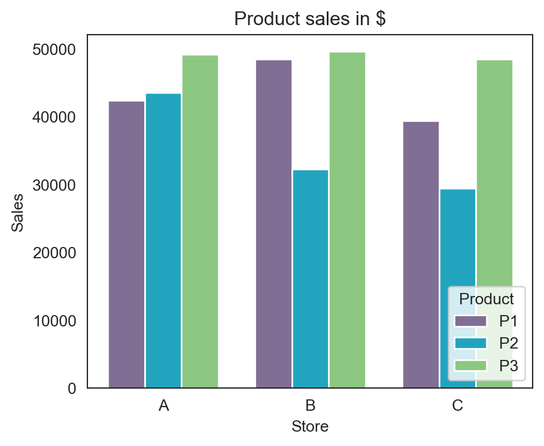
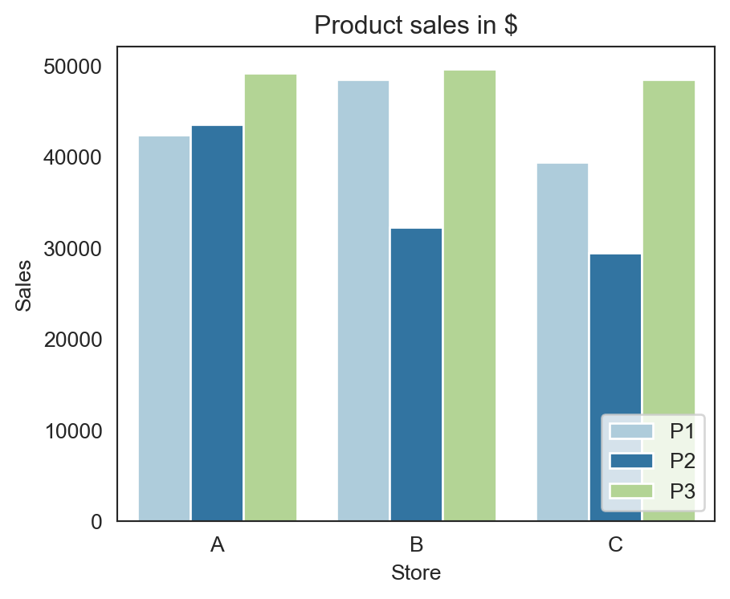

# Import libraries
import pandas as pd
import numpy as np
import plotly.express as px
import plotly.graph_objects as go
import matplotlib.pyplot as plt
import seaborn as snsCreating clustered bar graphs with Python
Data Visualization
Python
A tutorial on creating clustered bar graphs using Python.
A clustered bar graph, also known as a grouped bar chart, is used to plot numerical values for the levels of two categorical variables in a dataset. In these graphs, the bars are grouped based on the levels of one categorical variable. The colors of the bars within each group represent the levels of the second categorical variable. In this article, we use a dummy dataset to create clustered bar graphs with Python.
Pre-requisites
To follow through with the exercises in this article, you should
Have a working knowledge of Python.
Have the following Python libraries installed in your machine:
pandas,matplotlib,plotly, andseaborn.
Import Libraries
Import all libraries necessary to complete this exercise using the following code:
The Data
| Store | Product | Sales ($) |
|---|---|---|
| A | P1 | 42,500 |
| B | P1 | 48,502 |
| C | P1 | 39,500 |
| A | P2 | 43,600 |
| B | P2 | 32,303 |
| C | P2 | 29,500 |
| A | P3 | 49,270 |
| B | P3 | 49,664 |
| C | P3 | 48,507 |
Table 1: Dummy sales data.
Table 1 shows a dummy dataset having 3 columns and 9 rows. The dataset is said to have a long format because its first column (Store) has values repeating in multiple rows. We would like to see how the sales values for products P1, P2, and P3 change across stores A, B, and C, and a clustered bar graph is ideal for visualizing these changes. We use pandas to recreate the dataset in Python. Here is the code:
# Create dataset
df = pd.DataFrame({"Store": ["A", "B", "C", "A", "B", "C", "A", "B", "C"], "Product": ["P1", "P1", "P1", "P2", "P2", "P2", "P3", "P3", "P3"], "Sales": [42500, 48502, 39500, 43600, 32303, 29500, 49270, 49664, 48507]})
print(df) Store Product Sales
0 A P1 42500
1 B P1 48502
2 C P1 39500
3 A P2 43600
4 B P2 32303
5 C P2 29500
6 A P3 49270
7 B P3 49664
8 C P3 48507Creating the graph
Method 1: Using Plotly
You can use either the plotly.express or the plotly.graph_objects module to plot graphs in Plotly. The plotly.graph_objects module is best for building complex graphs requiring significant customization.
To build the clustered bar graph in plotly.express, use the following code:
# plotly.express clustered barchart
fig = px.bar(df, x="Store", y="Sales",
color="Product", barmode="group", title="Product sales in $",
color_discrete_sequence=px.colors.qualitative.Set2,
width=500, height=400,
text_auto=True, template="plotly_white")
fig.update_yaxes(visible=False)
fig.show()You can learn more about the parameters of px.bar() by using the command help(px.bar).
In the code above, we use the update_yaxes() figure method to suppress the graph’s y-axis and horizontal grid lines, removing graph clutter. The result is displayed in Figure 1.
Next, we create another clustered bar graph using plotly.graph_objects. However, to use this module, you must reorganize the dataset into a wide format, ensuring that each row in the new dataset represents a unique store.
As the data is small, you can recreate it from scratch using the following code:
df_wide = pd.DataFrame({"Store": ["A", "B", "C"], "P1": [42500, 48502, 39500],
"P2": [43600, 32303, 29500], "P3": [49270, 49664, 48507]})
print(df_wide) Store P1 P2 P3
0 A 42500 43600 49270
1 B 48502 32303 49664
2 C 39500 29500 48507If the data were large, it’d be easier to reorganize it using the pivot() method in pandas. This method has the following three crucial parameters:
columns: columns of the new DataFrame.
index: column used to create the new DataFrame’s index.
values: columns used to populate the new DataFrame.
Use the command help(df.pivot) to learn more about pivot().
For this case, you can use pivot() to reorganize the data as follows:
df_wideP = df.pivot(columns=["Product"], index="Store", values="Sales")
print(df_wideP)Product P1 P2 P3
Store
A 42500 43600 49270
B 48502 32303 49664
C 39500 29500 48507Having reorganized the data, we can now use plotly.graph_objects to visualize it. The result is the graph in Figure 2.
data=[go.Bar(name="P1", x=df_wide["Store"], y=df_wide["P1"], text=df_wide["P1"], marker_color="rgb(102, 194, 165)"),
go.Bar(name="P2", x=df_wide["Store"], y=df_wide["P2"], text=df_wide["P2"], marker_color="rgb(252, 141, 98)"),
go.Bar(name="P3", x=df_wide["Store"], y=df_wide["P3"], text=df_wide["P3"], marker_color="rgb(141, 160, 203)")]
layout = go.Layout(
title={"text": "Product sales in $"},
xaxis={"title": "Store"},
legend={"title": "Product"},
width=500, height=400, template="plotly_white",
barmode="group"
)
fig_go = go.Figure(data=data, layout=layout)
fig_go.update_yaxes(visible=False)
fig_go.show()Method 2: Using Matplotlib
As we already have a wide pandas DataFrame, i.e., df_wide, we can call pandas’ plot() method on this DataFrame to plot the required graph. This method leverages Matplotlib’s plotting capabilities, resulting in the graph in Figure 3. Here’s the code:
# Clustered bar graph using pandas' plot() method
colors = ["#816e94", "#22a4bf", "#8cc781"]
df_wide.plot(x="Store",
kind="bar", width=0.9,
stacked=False, figsize=(5, 4), title="Product sales in $",
xlabel="Store", ylabel="Sales", color=colors)
plt.legend(loc="lower right", title="Product");

Alternatively, you can use matplotlib’s bar() method, as shown below.
# Clustered bar graph using matplotlib's bar() method
barWidth = 0.25
colors = ["#816e94", "#22a4bf", "#8cc781"]
# Sales values for products p1, p2, and p3
p1 = df_wide["P1"]
p2 = df_wide["P2"]
p3 = df_wide["P3"]
# Positions of bar groups along the x-axis
pos1 = np.arange(len(p1))
pos2 = pos1 + barWidth
pos3 = pos2 + barWidth
# Plot graph
fig, ax = plt.subplots(figsize=(5, 4))
ax.bar(pos1, p1, color=colors[0], width=barWidth, label="P1")
ax.bar(pos2, p2, color=colors[1], width=barWidth, label="P2")
ax.bar(pos3, p3, color=colors[2], width=barWidth, label="P3")
ax.set_xlabel("Store")
ax.set_xticks(pos1 + barWidth) # Set x-ticks to be in the middle of the bar groups
ax.set_xticklabels(["A", "B", "C"]) # store group labels
ax.legend(loc="lower right", title="Product")
plt.title("Product sales in $")
plt.ylabel("Sales")
plt.show()

As you can see, this method builds every bar from the ground up. To use it effectively, you must specify the positions of the bar groups and ticks along the x-axis and the width of the bars. In this case, the first, second, and third groups start at 0, 1, and 2, respectively. Each group contains three bars (for P1, P2, and P3), so the total width of these three bars must be less than 1 unit, with each bar having a maximum width of 0.33 units. If the width of a bar exceeds 0.33 units, the bar groups will touch each other or overlap. We set the bar width at 0.25 units, resulting in the graph shown in Figure 4.
Method 3: Using Seaborn
The Seaborn library is built on top of Matplotlib and provides many tools to enhance Matplotlib’s plotting capabilities.
We use Seaborn’s barplot() method to plot the clustered bar graph. This method supports both wide- and long-format data. However, it’s easier to use with long-format data where critical variables are not spread over multiple columns. Here’s the code:
# Clustered bar graph using Seaborn's barplot() method
custom_palette = ["#a6cee3", "#1f78b4", "#b2df8a"]
fig, ax = plt.subplots(figsize=(5, 4)) # Set plot dimensions.
sns.set_style("white")
sns.barplot(x="Store", y="Sales", hue="Product", data=df, palette=custom_palette).set(title="Product sales in $")
plt.legend(loc="lower right")
plt.show()

Many methods used in the code above, like plt.show() and plt.subplots(), are familiar, as we’ve already used them when plotting with Matplotlib.
The code outputs the graph in Figure 5.
Conclusion
Being Python’s first visualization library, Matplotlib has become a favorite of many Python users. Several later libraries, like pandas and Seaborn, are built on top of it because it is highly customizable and flexible. However you may have to write a lot of code with Matplotlib to create appealing graphs. Generally, of all libraries discussed in this article, the plotly.express module is the easiest to use for creating clustered bar graphs and provides the most appealing results.